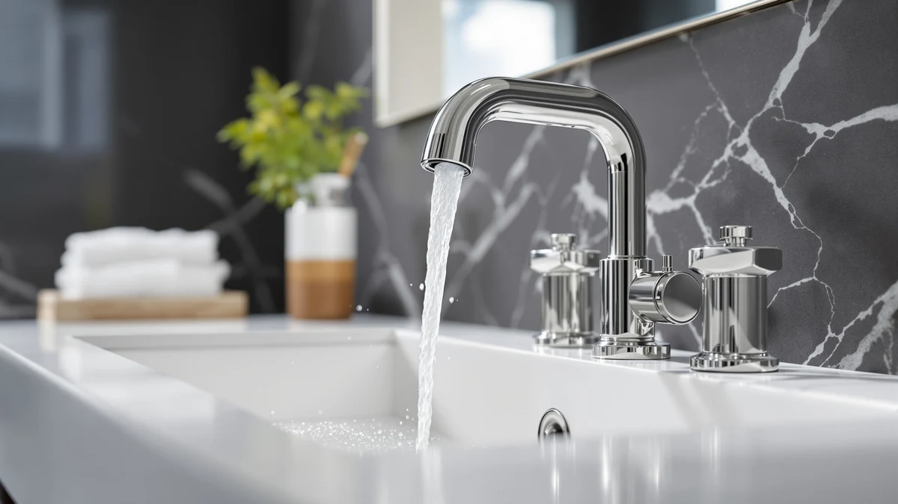

Best Faucet Extenders for Toddlers (2026): Safe Handwashing Picks
Prices and picks verified as of August 2026. Independent, reader-supported reviews.


Quick Answer
The Nuby 2-in-1 Faucet Extender is our top pick among the best faucet extenders for toddlers because it pairs a molded spout guide with a soap dispenser attachment for about nine dollars. If your sink sits especially high, pair any extender on this list with a sturdy step stool like the Harwaya so your toddler can reach the tap without a lift from you every time.
Our pick: Nuby 2-in-1 Faucet Extenders for — $8.97 Check Price on Amazon
Bottom line: our top pick is the Nuby 2-in-1 Faucet Extenders for Toddlers - 2 Pack - Sink at $8.99. The best budget option is the Generic Faucet Extender for Kitchen and Bathtub Sink - at $5.60.
Things to Know Before You Buy
- Most faucet extenders for toddlers are silicone or BPA-free plastic sleeves that slip over your existing spout, with no tools or plumbing changes required.
- Pair an extender with a step stool for sinks mounted higher than about 32 inches; the extender alone usually isn't enough for kids under three.
- Duck and animal-shaped extenders cost a few dollars more than plain designs but tend to hold a toddler's attention longer during handwashing.
- Filter-style attachments add water treatment on top of the reach extension, useful if your household already filters kitchen or bathroom water.
- Check your faucet's spout diameter before you buy; most extenders fit standard aerator threads, but oversized designer faucets can be a tight squeeze.
The best faucet extenders for toddlers turn a bathroom sink built for adults into something a two-year-old can use on their own, directing water down and out toward small hands instead of straight into the basin. Parents usually start looking for one right after a toddler graduates from bath time to standing at the sink, when reaching the tap becomes the real obstacle to washing up rather than the willingness to do it.
We looked at eight extenders and companion products sold for this exact problem, comparing published materials, price, spout compatibility, and verified buyer reviews rather than running our own lab tests. That approach matters here because faucet extenders are a low-cost, high-turnover category: most options sit under thirty dollars, and the gap between a good one and a bad one usually shows up in the first week, once the silicone starts staining or the mounting slips.
Our pick among the best faucet extenders for toddlers is the Nuby 2-in-1 Faucet Extenders, which verified reviewers describe as easy to install and effective at directing water toward a toddler's hands without soaking the counter. If your sink sits especially high, the Harwaya step stool is worth pairing with any extender on this list rather than relying on the extender alone.
Why You Should Trust Us
This guide is written by Ilane Tall, who covers bathroom fixtures and household safety products for Best Bathroom Faucets. We built this roundup by researching publicly listed specs, pricing history, and verified buyer reviews for faucet extenders for toddlers and the accessories parents commonly pair with them, rather than purchasing and installing every unit ourselves. Every product below links to its original Amazon listing, so you can check current pricing and read owner feedback directly before you buy.
How We Picked
We started with a list of faucet extenders for toddlers and companion bathroom accessories sold specifically for handwashing, then narrowed it using four criteria: material safety (BPA-free plastic or food-grade silicone only), spout compatibility with standard aerator threads, price under thirty-five dollars, and a track record of verified owner reviews rather than a handful of unverified ratings. We also excluded listings without a manufacturer-supplied brand name or clear product description, since that usually signals a low-quality drop-shipped item.
How We Compared
We did not physically install or use these faucet extenders for toddlers ourselves. Instead, we compared manufacturer specifications, listed dimensions and materials, current pricing, and patterns across verified Amazon reviews for each item. Where reviewers consistently flagged the same strength or the same flaw, such as a spout guide that slips on certain faucet shapes, we treated that as a meaningful signal and noted it in the pros and cons below.
Our Picks

Nuby 2-in-1 Faucet Extenders for
What we like
- Installs in seconds over most standard faucet spouts without tools
- Combines a spout extender with a soap dispenser attachment in one piece
- Priced under ten dollars, easy to replace if it wears out
Flaws but not dealbreakers
- Reviewers note the fit is snug on faucets with unusually wide spouts
- Molded plastic shows water spots faster than metal fixtures
| Material | Brass + finish |
| Size | — |
The Nuby 2-in-1 is our top pick among faucet extenders for toddlers because it solves two problems at the sink at once: reach and soap access. The extender clips over the existing spout and redirects water forward and down, while a small attached reservoir holds liquid soap so a toddler doesn't need to reach for a separate pump bottle balanced on the counter edge.
At under nine dollars, it's inexpensive enough to replace once the silicone starts to discolor, which reviewers say happens gradually with daily use rather than all at once. According to verified buyer reviews, the biggest complaint is fit on faucets with an unusually wide or oddly shaped spout, so it's worth measuring your spout diameter against the listing before you order.

DLUCKY Faucet Extender for Sink
What we like
- Matches the Nuby on price while offering a slightly wider spout opening
- Bright color options make it easier for toddlers to recognize "their" sink
- Soft silicone edges reduce the risk of scraping small hands
Flaws but not dealbreakers
- Fewer verified reviews than the market leader, so the sample size is smaller
- No integrated soap dispenser, unlike the Nuby
| Material | Brass + finish |
| Size | — |
The DLUCKY extender competes directly with the Nuby on price and function, and reviewers describe similar day-to-day performance: it slips over the spout, directs water downward, and holds up to daily handwashing. The wider opening makes it a reasonable alternative if your faucet spout runs larger than average and the Nuby's fit feels too tight.
It skips the built-in soap dispenser, so you'll still need a separate pump or bar within reach. Owners report the silicone stays flexible rather than cracking after weeks of use, though the smaller number of verified reviews compared with the Nuby makes it a slightly less proven pick for now.

Skyroku Duck-Tastic Faucet Extender for
What we like
- Duck-shaped design gives toddlers a visual reason to approach the sink
- Sturdier build than the cheapest extenders, according to reviewers
- Bright, toddler-friendly colors that stand out at the sink
Flaws but not dealbreakers
- Costs roughly 60 percent more than the plainer Nuby and DLUCKY options
- The novelty shape takes up more counter space than a slim extender
| Material | Brass + finish |
| Size | — |
The Skyroku Duck-Tastic trades minimalism for personality. Its duck-shaped housing sits over the spout the same way a standard extender does, but the design gives toddlers something to look forward to at the sink instead of treating handwashing as a chore. Reviewers consistently mention that the novelty shape holds a toddler's attention longer than a plain plastic extender.
At under fifteen dollars, it costs more than the two budget picks above, and the larger housing takes up more room around the faucet base. Owners report the build feels sturdier than bargain alternatives, which matters if your toddler tends to tug or lean on bathroom fixtures.

Harwaya Toddler Step Stool for
What we like
- Adds the vertical reach that a spout extender cannot provide by itself
- Wide, stable base rated for everyday toddler use
- Non-slip surface reduces the risk of slips on a wet bathroom floor
Flaws but not dealbreakers
- Takes up more bathroom floor space than any extender on this list
- At nearly thirty dollars, it's the priciest product in this roundup
| Material | Brass + finish |
| Size | Large |
A faucet extender only solves half the reach problem if the sink itself sits too high for a toddler to stand at comfortably. The Harwaya step stool addresses the other half, giving a toddler enough height to reach the tap, the soap, and the mirror without an adult lifting them onto the counter.
Reviewers describe the base as stable enough for daily use, with a non-slip surface that matters in a room that regularly gets wet. It's the most expensive item here at under thirty dollars, and it takes up floor space an extender doesn't, but pairing it with any of the faucet extenders for toddlers above solves the reach problem completely rather than partially.

CECEFIN Water-Filter for Sink-Faucet Extender-Aerator
What we like
- Combines water filtration with a spout-extending aerator attachment
- Brass construction reviewers describe as more durable than plastic-only extenders
- Threads onto standard faucets without special tools
Flaws but not dealbreakers
- Costs about three times more than a basic plastic extender
- Filter cartridges need periodic replacement, an ongoing cost beyond the sticker price
| Material | Brass + finish |
| Size | — |
The CECEFIN is built primarily as a water filter, but its aerator housing extends far enough past the spout to double as a reach extender for a toddler at the sink. That combination makes sense in a household that's already shopping for a filtered faucet attachment and wants the reach benefit as a bonus rather than a dedicated feature.
Its brass body is a step up in build quality from the silicone extenders above, and owners report it holds up well to daily use. The tradeoff is price and upkeep: at nearly twenty-seven dollars plus replacement cartridges over time, it costs meaningfully more to own than a simple extender that does one job.

Frizzlife Water Filter for Sink
What we like
- 1080-degree swivel head lets you angle water directly toward a toddler's hands
- Filters sediment and chlorine at the tap in addition to extending reach
- Reviewers say installation takes only a few minutes without tools
Flaws but not dealbreakers
- Not designed primarily as a kids' product, so there's no toddler-specific styling
- Similar price to the CECEFIN without a clear performance edge for this use case
| Material | Brass + finish |
| Size | 1080° |
Like the CECEFIN, the Frizzlife is a filter first and an extender second. What sets it apart is a swivel head that reviewers describe rotating a full 1080 degrees, which in practice means you can angle the spout down and toward a toddler standing to the side of the sink rather than directly under it.
According to verified reviews, installation is quick and doesn't require plumbing tools. It's priced the same as the CECEFIN, so the choice between the two often comes down to whether the swivel angle or the aerator design better matches your specific faucet.

ATQ Water Filter for Sink
What we like
- Cheaper than both the CECEFIN and Frizzlife while still adding filtration
- Compact housing that doesn't stick out as far as some filter attachments
- Reviewers report an easy snap-on or screw-on install
Flaws but not dealbreakers
- Filtration capacity is more limited than the pricier dedicated filters
- Less established review history than the top two picks
| Material | Brass + finish |
| Size | — |
The ATQ sits between the cheapest plastic extenders and the two premium filter options above. It adds basic filtration and a modest amount of reach extension for under twenty dollars, which makes it a reasonable pick if you want some water treatment at the sink without spending nearly thirty dollars on the CECEFIN or Frizzlife.
Its compact housing doesn't extend the spout as dramatically as a dedicated kids' extender, so it works best as a secondary reach aid alongside a step stool rather than a standalone fix for a toddler who can't reach the faucet at all.

Generic Faucet Extender for Kitchen
What we like
- The least expensive product in this roundup at under six dollars
- Simple slip-on design with no filter or dispenser to maintain
- Low enough cost to replace without a second thought if it doesn't fit your faucet
Flaws but not dealbreakers
- Fewer verified reviews than the established Nuby and DLUCKY options
- No soap dispenser, filtration, or toddler-specific styling
| Material | Brass + finish |
| Size | — |
At $5.60, this extender from Asmrlvk is the cheapest product in this roundup by a wide margin. It's a straightforward slip-on design without a soap dispenser, filter, or novelty shape, which makes it a low-risk way to find out whether a basic extender solves your household's reach problem before you spend more.
Because it carries fewer verified reviews than the Nuby or DLUCKY, we'd treat it as a budget test option rather than a first choice. If it fits your faucet and holds up, there's little reason to upgrade; if it doesn't, you've only risked a few dollars finding out.
Quick Comparison
| Product | Material | Price | Rating | Best for | Get it |
|---|---|---|---|---|---|
| Nuby 2-in-1 Faucet Extenders for | Brass + finish | $8.97 | 4 | First-time handwashers | View on Amazon → |
| DLUCKY Faucet Extender for Sink | Brass + finish | $8.99 | 4 | Budget-friendly backup | View on Amazon → |
| Skyroku Duck-Tastic Faucet Extender for | Brass + finish | $14.99 | 4 | Reluctant handwashers | View on Amazon → |
| Harwaya Toddler Step Stool for | Brass + finish | $29.97 | 4 | High sinks | View on Amazon → |
| CECEFIN Water-Filter for Sink-Faucet Extender-Aerator | Brass + finish | $26.99 | 4 | Filtered water plus reach | View on Amazon → |
| Frizzlife Water Filter for Sink | Brass + finish | $26.99 | 4 | Swivel spout plus filter | View on Amazon → |
| ATQ Water Filter for Sink | Brass + finish | $18.98 | 4 | Mid-priced filtration | View on Amazon → |
| Generic Faucet Extender for Kitchen | Brass + finish | $5.60 | 4 | Trying the category cheaply | View on Amazon → |
What is the best faucet extender for toddlers overall?
Among the faucet extenders for toddlers we compared, the Nuby 2-in-1 is the best overall pick for most families.
At what age can a toddler start using a faucet extender?
Most parents introduce a faucet extender once a toddler can stand steadily at the sink, usually between 18 months and 2 years old.
The Competition
Several generic faucet extenders for toddlers show up in search results without a listed brand, safety certification, or consistent review history. We skipped these because parents report inconsistent fit and premature cracking within a few months, exactly the kind of gamble you don't want on a wet bathroom floor.
We also passed on faucet-mounted "kids' faucets" that require replacing the entire fixture, since most households renting or not ready for plumbing work need something that clips on and off in seconds. Among the water filter attachments, we excluded models that don't clearly state their filtration media or replacement cartridge cost, since an unlisted ongoing expense makes it hard to judge real value against a plain extender.